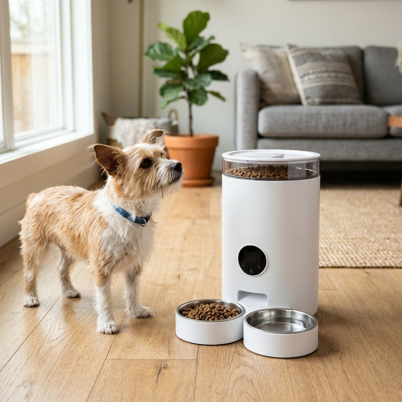
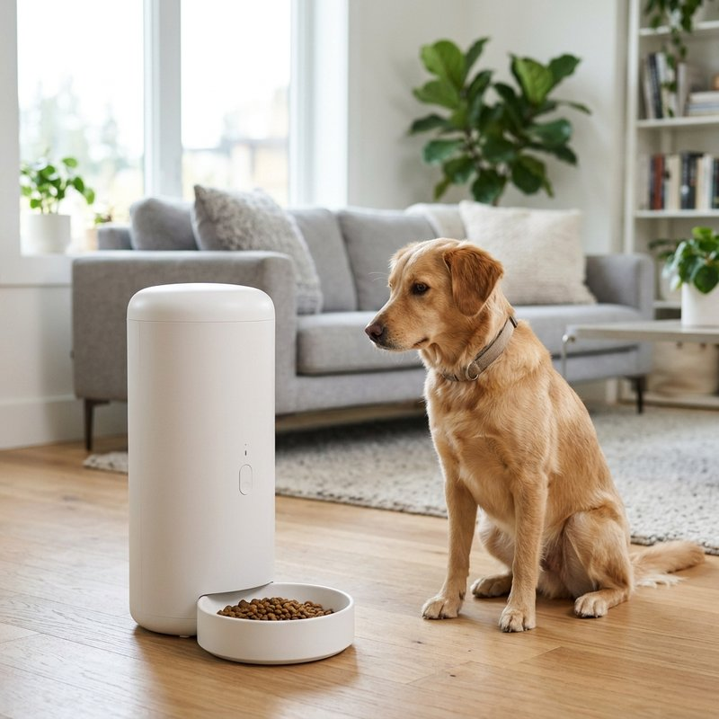
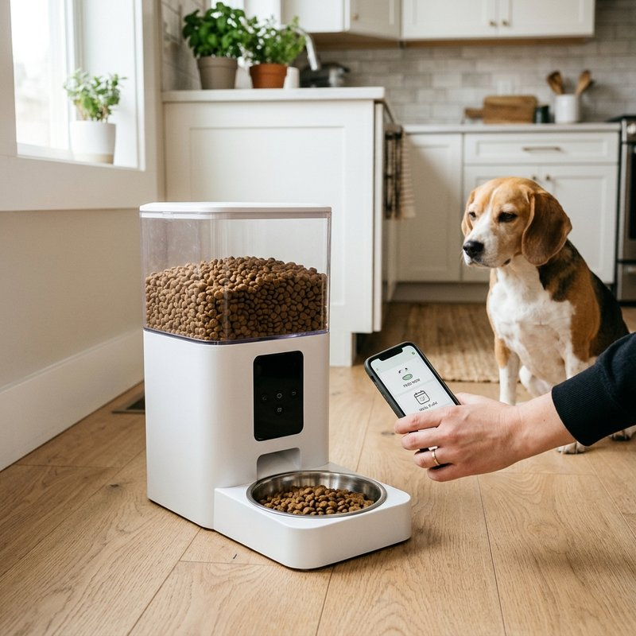

Comparamos 7 comedouros automáticos para cachorro realmente à venda no Brasil em 2026, de opções sem Wi-Fi a modelos com câmera e app completo: VDRBG 4L Wi-Fi, Dogis Tech DA010BR, Newpet 4L, Madog com câmera, Jwcom JW4L-W, Luatek e Geonav. O melhor pra você depende de três coisas — se precisa de controle remoto, se quer câmera pra ver o pet à distância, e quanto está disposto a pagar por isso.
Resumo rápido
- O VDRBG 4L Wi-Fi tem o melhor equilíbrio entre app completo, ajuste fino de porções (1 a 40) e preço entre os modelos com controle remoto.
- Quem quer câmera e suporte nacional formal com garantia de 12 meses deve priorizar o Dogis Tech DA010BR (R$ 683,15 no Mercado Livre).
- O Newpet 4L é a opção mais barata entre os modelos de 4L+ pra quem não precisa de Wi-Fi nem câmera.
- O Madog com câmera (R$ 459 no Mercado Livre) tem o melhor custo-benefício entre os modelos com visão noturna e microfone.
- Para quem quer Wi-Fi sem pagar por câmera, o Jwcom JW4L-W (R$ 288) é o mais barato do grupo e o Geonav (R$ 258,53) traz integração com Alexa e Google Assistente.
guia completo de comedouro automático para pet
| Produto | Preço aprox. | Capacidade | Wi-Fi/App | Câmera | Nota | Onde comprar |
|---|---|---|---|---|---|---|
| VDRBG 4L Wi-Fi | Faixa intermediária-alta | 4L | Sim | Não | 8.7 | Ver preço |
| Dogis Tech DA010BR | R$ 683,15 (ML) | 6L | Sim | Sim (Full HD) | 8.4 | Ver preço |
| Newpet 4L | Faixa intermediária | 4L | Não | Não | 8.3 | Ver preço |
| Madog com Câmera | R$ 459 (ML) | 6L | Sim | Sim (visão noturna) | 8.2 | Ver preço |
| Jwcom JW4L-W | R$ 288 | 4L | Sim | Não | 7.8 | Ver preço |
| Hi by Geonav | R$ 258,53 | 4L | Sim | Não | 7.7 | Ver preço |
| Luatek 4L | R$ 599,90 | 4L | Sim | Não | 7.3 | Ver preço |

Entre os modelos com controle remoto, o VDRBG 4L Wi-Fi tem o app mais completo e o ajuste de porção mais fino (1 a 40 por refeição) via app Tuya, com gravação de voz incluída. É o modelo com melhor relação entre recursos e preço para quem quer monitorar e ajustar a alimentação à distância.
Leia o review completo do VDRBG 4L Wi-Fi
🐾 Confira o preço e a disponibilidade atual no Mercado Livre.
Ver no Mercado LivreLink de afiliado: podemos receber uma comissão por compras feitas através deste link, sem custo adicional para você.

A Dogis Tech é marca nacional com loja própria, o que significa suporte e garantia formal de 12 meses — um diferencial real frente a marcas vendidas só por terceiros em marketplace. O modelo DA010BR traz 6L de capacidade (até 3,5kg), câmera e até 20 refeições programáveis por dia. No Mercado Livre, custa R$ 683,15 (de R$ 799, 14% off), com nota 4.7 em 27 avaliações e mais de 500 unidades vendidas, consultado no Mercado Livre em 22/10/2026 — é o mais caro do grupo com câmera, mas compensa com a maior capacidade e suporte formal.
🐾 Confira o preço e a disponibilidade atual no Mercado Livre.
Ver no Mercado LivreLink de afiliado: podemos receber uma comissão por compras feitas através deste link, sem custo adicional para você.

O Newpet 4L é um dos modelos com destaque de "Mais Vendido" na categoria no Mercado Livre. Combina capacidade de 4 litros e gravação de voz de até 12 segundos, funcionando via tomada ou pilhas — sem depender de Wi-Fi ou app. Para quem não tem rede estável perto do comedouro, ou simplesmente não quer lidar com configuração de app, é a opção mais direta do grupo.
Leia o review completo do Newpet 4L
🐾 Confira o preço e a disponibilidade atual no Mercado Livre.
Ver no Mercado LivreLink de afiliado: podemos receber uma comissão por compras feitas através deste link, sem custo adicional para você.

O Madog com câmera entrega Wi-Fi, câmera Full HD 1080p com visão noturna, com 6L de capacidade (até 3kg) — é o preço de um modelo intermediário sem câmera em outras marcas. No Mercado Livre, custa R$ 459 (última unidade em estoque no momento da consulta), com nota 4.8 em 174 avaliações e mais de 500 unidades vendidas, consultado no Mercado Livre em 22/10/2026.
🐾 Confira o preço e a disponibilidade atual no Mercado Livre.
Ver no Mercado LivreLink de afiliado: podemos receber uma comissão por compras feitas através deste link, sem custo adicional para você.

O Jwcom JW4L-W é o mais barato do grupo com Wi-Fi: R$ 288 (12x R$ 28,17 sem juros) no Mercado Livre, com nota 4.9 em 41 avaliações e mais de 100 unidades vendidas, consultado no Mercado Livre em 22/10/2026. Tem 4L de capacidade (até 1,5kg) e reúne comedouro e bebedouro em um só produto, sem câmera.
🐾 Confira o preço e a disponibilidade atual no Mercado Livre.
Ver no Mercado LivreLink de afiliado: podemos receber uma comissão por compras feitas através deste link, sem custo adicional para você.

O Alimentador Inteligente Hi by Geonav é vendido pela loja oficial da Geonav, marca consolidada no Mercado Livre (mais de 1 milhão de vendas, selo MercadoLíder Platinum). Custa R$ 258,53 (12x R$ 25,29 sem juros), com nota 4.8 em 129 avaliações e mais de 500 unidades vendidas, consultado no Mercado Livre em 22/10/2026. Tem 4L de capacidade, app Geonav Home com interface personalizável e comandos de voz via Alexa e Google Assistente, sem câmera.
🐾 Confira o preço e a disponibilidade atual no Mercado Livre.
Ver no Mercado LivreLink de afiliado: podemos receber uma comissão por compras feitas através deste link, sem custo adicional para você.

O Luatek (modelo 4L Tuya App Control) é controlado pelo app Tuya, tem 4L de capacidade (até 1kg) e vem com 4 filtros inclusos. Custa R$ 599,90 (10x R$ 59,99 sem juros) no Mercado Livre, consultado em 22/10/2026 — o anúncio não traz nota nem número de avaliações. Não tem câmera.
🐾 Confira o preço e a disponibilidade atual no Mercado Livre.
Ver no Mercado LivreLink de afiliado: podemos receber uma comissão por compras feitas através deste link, sem custo adicional para você.
Orçamento apertado, sem Wi-Fi em casa: Newpet 4L.
Quer controle remoto com bom app, sem pagar por câmera: VDRBG 4L Wi-Fi.
Quer ver o pet à distância, com suporte nacional formal: Dogis Tech DA010BR.
Quer câmera pelo menor preço possível: Madog com câmera.
Quer o Wi-Fi mais barato do grupo, sem câmera: Jwcom JW4L-W.
Quer integração com Alexa ou Google Assistente: Geonav.
Quer app Tuya e não se importa com a ausência de nota no anúncio: Luatek.
vale a pena um comedouro automático — prós, contras e preço
Se você tem cão e gato em casa, vale entender antes qual a diferença entre comedouro automático para gato e para cachorro antes de decidir o modelo.
Cães maiores comem mais rápido e em maior volume, o que expõe defeitos de calibração com mais facilidade do que em gatos ou cães pequenos. Reclamações de "porção errada" aparecem com mais frequência em relatos de tutores de cães grandes — provavelmente porque o erro percentual da calibração se torna mais perceptível em porções maiores. Na prática, vale testar a calibração do comedouro nos primeiros dias, independentemente do modelo escolhido, e priorizar reservatórios de 4L ou mais — o que já cobre todos os sete comedouros desta lista — para reduzir a frequência de reabastecimento.
As notas e recomendações deste ranking foram construídas a partir de especificações técnicas divulgadas pelos fabricantes e vendedores, cruzadas com preços verificados em sites oficiais e marketplaces nas datas indicadas em cada produto. Não realizamos teste físico simultâneo dos 7 aparelhos — os dados de capacidade, recursos e preço refletem o que consta nos anúncios e sites oficiais verificados na data de consulta. Preços de produtos eletrônicos mudam com frequência; confirme o valor atual antes de comprar. Veja nossa política editorial e de afiliados para entender como selecionamos e verificamos produtos.
Não existe um único melhor comedouro — depende da rotina e do orçamento. Para controle remoto com bom custo-benefício, o VDRBG 4L Wi-Fi fica no topo. Para quem quer câmera com suporte nacional e garantia formal, o Dogis Tech é a opção mais robusta. Para quem não precisa de Wi-Fi, o Newpet 4L entrega capacidade e gravação de voz por um preço bem menor.
Depende do que você quer monitorar. Se o objetivo é só garantir horário e porção certos, um modelo sem câmera como o Newpet 4L, Jwcom JW4L-W, Geonav ou Luatek resolve por menos dinheiro. Se você quer ver o pet remotamente, vale considerar o Madog com câmera ou o Dogis Tech DA010BR — nessa ordem de preço.
O Newpet 4L não depende de Wi-Fi nem app: a programação de horários e porções é feita direto no aparelho, com gravação de voz incluída. É a opção mais indicada para quem não tem Wi-Fi estável perto do local de alimentação do cão.
Sim. Cães maiores comem mais rápido e em maior volume, o que expõe defeitos de calibração com mais facilidade. Vale testar a calibração do comedouro nos primeiros dias e, para cães grandes, priorizar os modelos de 4L ou mais — o que já cobre todos os sete comedouros comparados aqui.
Não existe um único "melhor" comedouro automático para cachorro — existe o melhor para a sua rotina e seu orçamento. Se controle remoto com bom app é prioridade, o VDRBG 4L Wi-Fi é a escolha mais equilibrada. Se você quer câmera com suporte nacional formal, o Dogis Tech DA010BR vale o preço mais alto. Se o orçamento é a prioridade e você não precisa de Wi-Fi, o Newpet 4L segue sendo a opção mais direta — e o Madog com câmera é o jeito mais barato de ter visão noturna e microfone em casa.
melhor alimentador automático para gatos
Tem gato em casa também? Veja melhor comedouro interativo para gato: guia completo 2026.
Escrito pela Equipe Smart Pet Gadgets. Veja como comparamos preços e avaliações na nossa política editorial.
Nildo Alves — tutor de pets e curador de produtos no Smart Pet Gadgets. Pesquisa especificações de fabricante, dados de mercado e fontes veterinárias publicadas por terceiros para ajudar outros tutores a escolher melhor.
Sobre o Smart Pet Gadgets · Contato · Política editorial e de afiliados